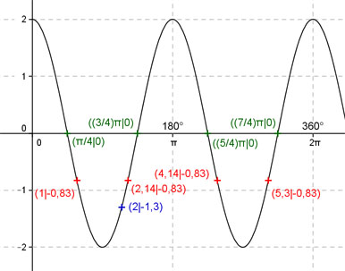

Aufgabe 168 Ergänzen Sie die Wertetabelle für x zwischen 0 und 2π: y = 2 cos 2x x 2 1 oder 2,14 oder 4,14 oder 5,3 y -1,3 -0,83 Amplitude = 2 ; Periode = 2π/2 = π Berechnung der Nullstellen: 2 cos 2x = 0 ---> Substitution 2x = u --> cos u = 0 --> u = π/2 + k * π mit k = 0, 1, 2, ... --> Rücksubstitution liefert 2x = π/2 + k * π |:2 --> x = π/4 + k * π/2 x1 = π/4 oder 45°, x2 = (3/4)π oder 135° , x3 = (5/4)π oder 225° x4 = (7/4)π oder 315°.  Funktionswert an einer Stelle x ermitteln: 2 * 180° x = 2 oder ---------- = 114,6° π f(2) = 2 cos (2*2) = 2 cos (2*114,6°) = -1,3 gerundet. Berechnung der x-Werte für y = f(x) = -0,83: f(x) = -0,83 eingesetzt, existiert zweimal zwischen 0 und π bzw. 0° und 180° und zweimal zwischen π und 2π bzw. 180° und 360° (siehe Graph). 2 cos 2x = -0,83 |: 2 --> cos 2x = -0,415 --> 2x = arc cos - 0,415 = 2 gerundet |:2 --> x = 1 --> 1 * 180° x1 = 1 oder ---------- = 57,3° π x2 = (π - 1) = 2,14 oder 122,6° x3 = (π + 1) = 4,14 oder 237,2° x4 = (2π - 1) = 5,3 oder 303,7° gerundet.